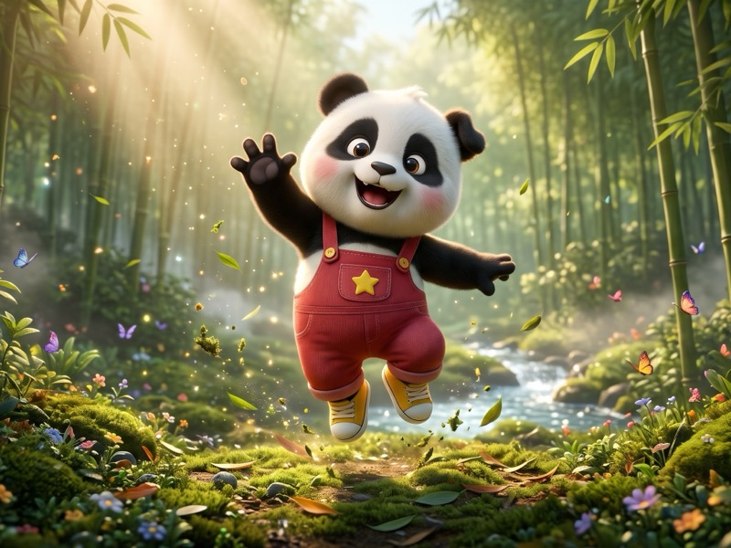

5 years old
Puki
Curious, full of energy and adorable. He pokes at everything and asks “Why?” about everything. In every episode, he's the one who has a problem and solves it.
“I wonder what this is?”
Loves
- Chocolate cookies
- Somersaults
- Jumping in puddles
- Watching bugs